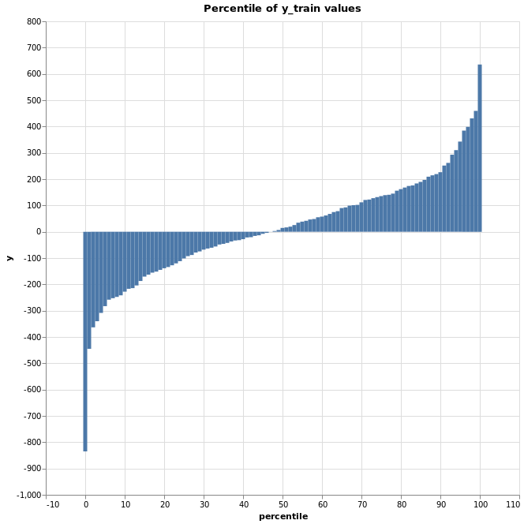

There are 4 strategies we can use to as a predictor for the Dummy Regressor. - Mean(default) - Always use the mean of y_train as the prediction - Median - Always use the median of y_train as the prediction - Quantile - Use the y_train value of the percentile specified - Constant - Only use the constant specified as the prediction
import numpy as np
import pandas as pd
import matplotlib.pyplot as plt
import seaborn as sns
import altair as alt
alt.renderers.enable('notebook')
from sklearn.dummy import DummyClassifier, DummyRegressor
from sklearn.datasets import make_classification, make_regression
from sklearn.model_selection import train_test_split
from sklearn.linear_model import LinearRegression
np.random.seed(42)
# Create a simple regression problem
X, y = make_regression(
n_samples=500,
n_features=5,
n_informative=10,
n_targets=1,
bias=10.0,
effective_rank=None,
tail_strength=0.5,
noise=155.0
)
# Train test split
X_train, X_test, y_train, y_test = train_test_split(X, y, test_size=0.33, random_state=42)
# Create percentile of y_train dataframe for chart to display
y_sort = np.sort(y_train)
perc = []
y_val = []
for i in range(101):
y_val.append(np.percentile(y_sort, i))
perc.append(i)
plot_y = pd.DataFrame({
'y': y_val,
'percentile': perc
})
dummy_mean = DummyRegressor(strategy='mean')
dummy_mean.fit(X_train, y_train)
print(dummy_mean.predict([1, 0, 4]))
print(y_train.mean())
[14.55126695 14.55126695 14.55126695]
14.551266954042632
dummy_constant = DummyRegressor(strategy='constant', constant=100)
dummy_constant.fit(X_train, y_train)
print(dummy_constant.predict([[0, 6, 7], 6, 2]))
[100 100 100]
dummy_median = DummyRegressor(strategy='median')
dummy_median.fit(X_train, y_train)
print(dummy_median.predict([1, 100, 400]))
print(np.median(y_train))
[14.57561847 14.57561847 14.57561847]
14.575618468552392
dummy_quantile = DummyRegressor(strategy='quantile', quantile=0.75)
dummy_quantile.fit(X_train, y_train)
print(dummy_quantile.predict([1, 5, 100000]))
print(np.percentile(y_train, 75))
[135.43852133 135.43852133 135.43852133]
135.43852133253466
# Create a selection that chooses the nearest point & selects based on x-value
base = alt.Chart(plot_y)
nearest = alt.selection(type='single', nearest=True, on='mouseover',
fields=['y'], empty='none')
bar = base.mark_bar().encode(
x='percentile',
y='y'
)
selectors = base.mark_point().encode(
x='percentile:Q',
opacity=alt.value(0),
).add_selection(
nearest
)
# Draw points on the line, and highlight based on selection
points = bar.mark_point().encode(
opacity=alt.condition(nearest, alt.value(1), alt.value(0))
)
# Draw text labels near the points, and highlight based on selection
text = bar.mark_text(align='left', dx=5, dy=0).encode(
text=alt.condition(nearest, 'percentile:Q', alt.value(' '))
)
text2 = bar.mark_text(align='left', dx=5, dy=-10).encode(
text=alt.condition(nearest, 'y:Q', alt.value(' '))
)
# Draw a rule at the location of the selection
rules = base.mark_rule(color='red').encode(
x='percentile:Q',
).transform_filter(
nearest
)
# Put the five layers into a chart and bind the data
alt.layer(
bar, selectors, points, rules, text, text2
).properties(
width=600,
height=600,
title="Percentile of y_train values"
)
<vega.vegalite.VegaLite at 0x7ff33fecec18>

There are 5 strategies we can use to as a predictor for the Dummy Regressor. - Stratified(Default) - Generates predictions based on the y_train's distribution - Most_frequent - Always use the mode of y_train as the prediction - Prior - Always predict the class that maximizes the y_train (like "most_frequent") - Uniform - Generates predictions uniformly at random - Constant - Always predicts a constant label that is provided by the user. This is useful for metrics that evaluate a non-majority class
Observe the probability of each prediction of each model. (Probability of 0.5 or above will make the prediction for the variable to be True)
np.random.seed(42)
# Create a simple classifier problem
X, y = make_classification(
n_samples=200,
n_features=5,
n_informative=3,
n_redundant=0,
n_classes=2
)
# Train test split
X_train, X_test, y_train, y_test = train_test_split(X, y, test_size=0.33, random_state=42)
dummy_stratified = DummyClassifier(strategy='stratified', random_state=42)
dummy_stratified.fit(X_train, y_train)
prob = dummy_stratified.predict_proba(X_test)
df = pd.DataFrame(
data=prob,
columns=['0','1']
)
df.head(6)
| 0 | 1 | |
|---|---|---|
| 0 | 1.0 | 0.0 |
| 1 | 0.0 | 1.0 |
| 2 | 0.0 | 1.0 |
| 3 | 0.0 | 1.0 |
| 4 | 1.0 | 0.0 |
| 5 | 1.0 | 0.0 |
dummy_mostfreq = DummyClassifier(strategy='most_frequent')
dummy_mostfreq.fit(X_train, y_train)
prob = dummy_mostfreq.predict_proba(X_test)
df = pd.DataFrame(
data=prob,
columns=['0','1']
)
df.head(6)
| 0 | 1 | |
|---|---|---|
| 0 | 1.0 | 0.0 |
| 1 | 1.0 | 0.0 |
| 2 | 1.0 | 0.0 |
| 3 | 1.0 | 0.0 |
| 4 | 1.0 | 0.0 |
| 5 | 1.0 | 0.0 |
dummy_prior = DummyClassifier(strategy='prior', random_state=42)
dummy_prior.fit(X_train, y_train)
prob = dummy_prior.predict_proba(X_test)
df = pd.DataFrame(
data=prob,
columns=['0','1']
)
df.head(6)
| 0 | 1 | |
|---|---|---|
| 0 | 0.514925 | 0.485075 |
| 1 | 0.514925 | 0.485075 |
| 2 | 0.514925 | 0.485075 |
| 3 | 0.514925 | 0.485075 |
| 4 | 0.514925 | 0.485075 |
| 5 | 0.514925 | 0.485075 |
dummy_uniform = DummyClassifier(strategy='uniform', random_state=42)
dummy_uniform.fit(X_train, y_train)
prob = dummy_uniform.predict_proba(X_train)
df = pd.DataFrame(
data=prob,
columns=['0','1']
)
df.head(6)
| 0 | 1 | |
|---|---|---|
| 0 | 0.5 | 0.5 |
| 1 | 0.5 | 0.5 |
| 2 | 0.5 | 0.5 |
| 3 | 0.5 | 0.5 |
| 4 | 0.5 | 0.5 |
| 5 | 0.5 | 0.5 |
dummy_constant = DummyClassifier(strategy='constant', constant=1, random_state=42)
dummy_constant.fit(X_train, y_train)
prob = dummy_constant.predict_proba(X_test)
df = pd.DataFrame(
data=prob,
columns=['0','1']
)
df.head(6)
| 0 | 1 | |
|---|---|---|
| 0 | 0.0 | 1.0 |
| 1 | 0.0 | 1.0 |
| 2 | 0.0 | 1.0 |
| 3 | 0.0 | 1.0 |
| 4 | 0.0 | 1.0 |
| 5 | 0.0 | 1.0 |
Dummy with a constant variable is a good baseline model for us to predict something that is a non-majority class because we can always predict the majority class and get a good score. So, we have to beat the baseline score of the dummy model to make sure our model is picking-up/identified something or else I might as well use the dummy model 😄
np.random.seed(42)
# Create a simple classification problem
X, y = make_classification(
n_samples=200,
n_features=5,
n_classes=2
)
#Modified y values
y = [0] * 180 #90% - 0
y.extend([1]* 20) #10% - 1
# Train test split
X_train, X_test, y_train, y_test = train_test_split(X, y, test_size=0.33, random_state=42)
from sklearn.linear_model import LogisticRegression
logreg = LogisticRegression(solver='lbfgs')
logreg.fit(X_train, y_train)
print(f"Logistic Regression has mean accuracy of {logreg.score(X_test, y_test)}.")
dummy_constant = DummyClassifier(strategy='constant', constant=0)
dummy_constant.fit(X_train, y_train)
print(f"Dummy Classifier has mean accuracy of {dummy_constant.score(X_test, y_test)}.")
Logistic Regression has mean accuracy of 0.9393939393939394.
Dummy Classifier has mean accuracy of 0.9393939393939394.
Dummy regressor and classifier with a good hyperparameter can be a good baseline model for your model compare with. If your model can't beat a naive model, then you have to tune your model more or use another model for the problem.